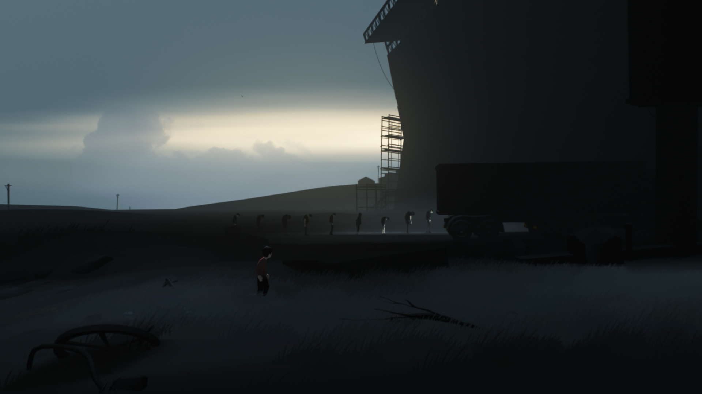
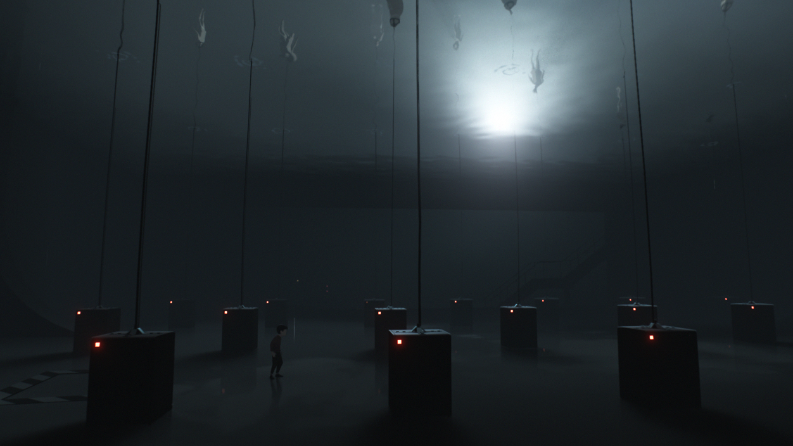
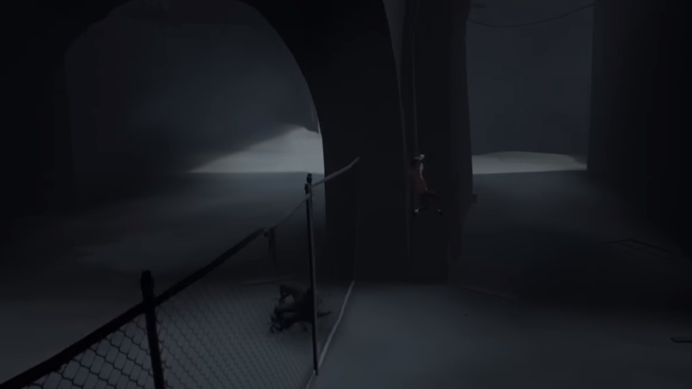
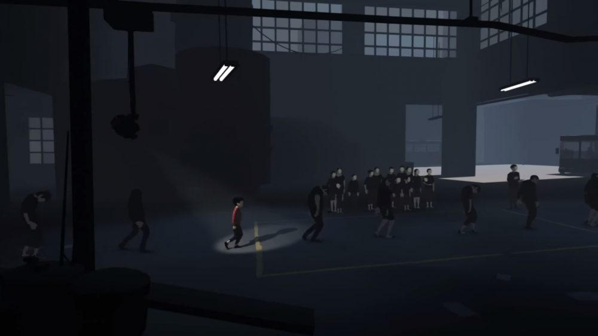

Author: Mason Mullanax
Date Published: Oct 24th, 2017
This game, with all its immersive settings, implicit story telling, and tight platforming blew away all my expectations of what a short 2 hour game can be. Following in the footsteps of its previous critically acclaimed project "Limbo", Inside is a linear side-scrolling game that becomes more of an experience than simply as game. You are faceless young boy in a red shirt exploring the inside of a comparatively huge and military research base filled with puzzles and intriguing environments. This game sets out to be an experience and all the choices made during development reinforce that idea which culminates into a short and focused game that grips the player from beginning to end.
As you begin to discover what the world offers and interact with puzzles, you begin to realize just how dark and creepy the setting truly is. Without giving too much away, you'll encounter lifeless dumby bodies, some of which you control with a device attatched your head. Others appear in large quantities controlled by researchers in the base without said device. You are meant to interpret these devilish visual cues as the researchers making progress on a secret project, which they player eventually uncovers. Themore you progress in the game, the more evil the experiments you discover. This develops the already unsettling setting into a truly terrifying place. Inside thrives here, the art direction and sparse music make you feel on edge, scared of what you might stumble onto next. But that makes you want to play more, to see for yourself what else is going on.
Generally when you are playing, you can expect two things, the first is holding your left joystick to the right to run. The second is puzzles. Running, of course, does not sound like a fun time. In this game however, it serves as an introduction to new areas, letting you soak up all the atmoshperic goodness, while also serving as a break from the puzzles you'll be solving. And oh yes, you will be solving plenty of puzzles along the way. In a game that is meant to be more of an experience, puzzles can be tedious and lead the game away from focused storytelling. Playdead, for the most part, avoids these troubles with grace. Inside's puzzles are at their best when they appear simple, but require some clever thinking to get the always elsuive "AH HAH" moment. You never becomed overwhelmed with where to start or what you are supposed to do, instead all your thoughts go towards how to solve a puzzle. In other words, the pieces of the puzzle are clearly laid out in front of you, and you must consider how to put them together. The best Inside offers leaves you wondering how you couldn't solve the puzzle right away because it seems so obvious. Even in this short game, there are puzzles that don't require clever thinking and are more of a chore to finish than they are worth. The best example of this has three dogs chasing after you, and the player must open a blocked path by removing wooden boards from the doorway. To progress, you have to climb over a fence multiple times to get the dogs to run around the fence giving you just enough time to pull one board off the door. Its the sort of puzzle that requires a lot of time just running back and forth, which is time better spent playing the more interesting bits the game has.
One potential drawback to this game is its length. It takes between 2-3 hours to complete. I tend to think this is more to the game's benefit however. Puzzles are never overused or repetitive, and this game is best played in one sitting as you get the full experience, begginning to end. The game doesn't waste your time. They incoporated a very forgiving death system where load times are short and you are, more often than not, loaded right before the mistake you made that led you to death. The developers respect the player's time and patience by not forcing you to replay entire sections, unlike games like Little Nightmares. The Win-Loss state is never important in these types of games, becuase nothing is at stake other than your time, and Inside knows that. It makes for a streamlined frustration-free experience.
Inside deserves all the outstanding reviews and press it recieved. Playdead is a developer you should watch out for in coming years as they release new and different titles. I highly recommend picking up this game on sale or at full price. It is currently one of the best indie games available.
Overall Score: 10/10
Watchability: 8/10